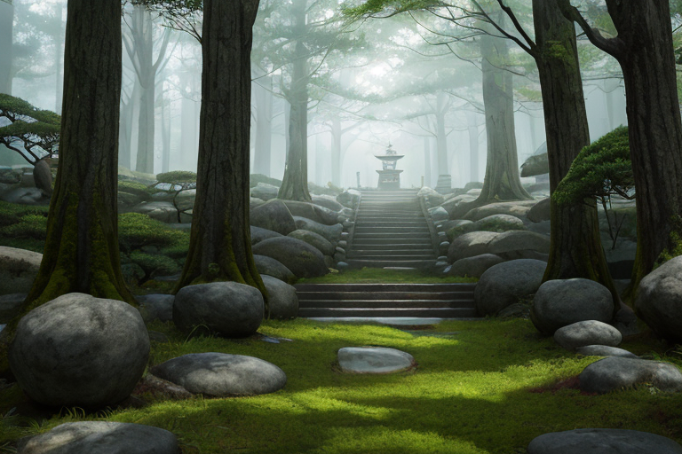
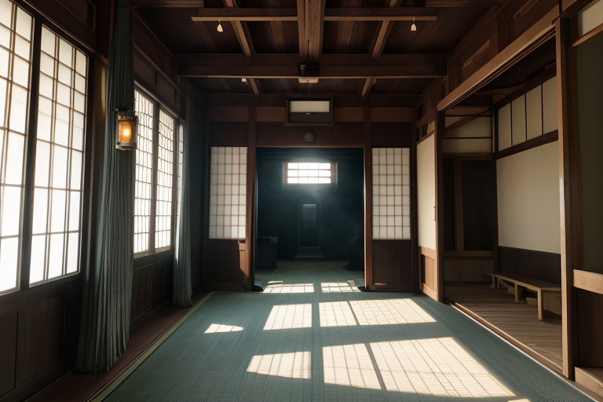
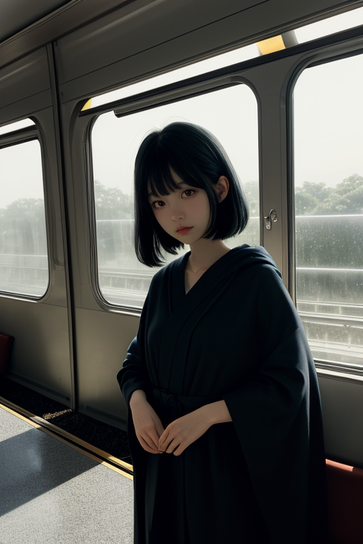
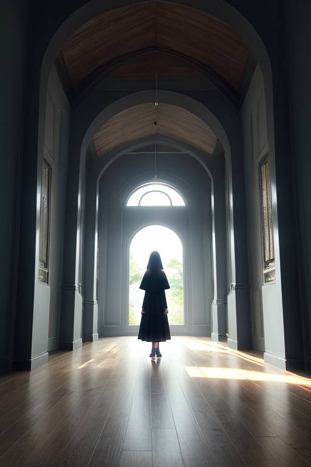

第一章「現実の埼玉」
あなたはまだ気づいていない。この土地にも、王がいることを。
秩父神社の森は、昼なお暗い。訪れる人の足音は、苔むした石段の上で吸い込まれるように消える。ここは武蔵国の中心、山々に抱かれた聖地だ。静寂は、祈りそのもののように濃密で、訪れる者の心のざわめきさえ、そっと包み込んでいく。その静けさの底で、何かが微かに、しかし確かに動いている。影が、木漏れ日の間を、規則正しく、ゆっくりと滑るように移動する。それは風でもない、気のせいでもない。神社の本殿の深い軒下、最も目立たない柱の陰に、濃紺に銀の細い光が絡まった紋章が、一瞬、浮かび上がる。
サイタマル・アンブラは、その影の中に立っていた。王の姿は、社殿の古びた木材の色に溶け込み、ほとんど認識できない。彼は動かない。ただ、この場所に集まる「圧」――地殻のわずかなひずみ、人々の無意識の願い、歴史が積もった重み――を、影を通して感じ取り、受け流している。隣には、小さな影の塊のような主席妖精アンブラルが佇む。彼女は、参道を上がってくる一人の老人の、ふらつく足取りを見つめ、ほんの一瞬、その影を濃くした。老人は、何気なく手すりに触れ、足をしっかりと踏みしめた。これが、彼らの仕事だ。派手な奇跡など起こさない。転びそうな瞬間を一つ、確実に支える。平凡な日常の、その影の部分を、ほんの少しだけ調整する。
第二章 歪みの兆候
秩父神社の静謐は、祈りのエネルギーで満ちていた。サイタマル・アンブラは、本殿の影に溶け込み、その流れを感じ取っていた。訪れる人々の願い――健康、商売繁盛、家族の安泰――それらは無数の細い光の糸のように立ち昇り、土地の「静律」を織りなしていた。しかし今日、その幾本かの糸に、微かな震えがある。焦りや、先行きへの不安が混じっている。それは、土地の深部で蠢く歪みの、かすかな前兆だった。
「武蔵国の中心」として歴史の圧力を受け続けてきたこの地は、時にその重みを内側に歪みとして蓄える。明治期の秩父事件のように、表立たない苦しみが、ある臨界点で静かに噴出する性質を持つ。王は目を閉じ、影を通じてその圧力を探った。歪みはまだ小さな瘤。だが、放置すれば、どこかで日常を揺るがす微細な亀裂となるだろう。
アンブラルが、長瀞の岩畳の上を流れる荒川の水音を、影の中に映し出した。水の流れには、土地の緊張が如実に表れる。今はまだ穏やかだが、その底に、ごく僅かな淀みがある。彼らは、その淀みが大きな渦とならないよう、祈りの糸を一本一本、丁寧に整え始めた。

第三章 王の葛藤
鉄道博物館の静かな展示室。蒸気機関車の巨大な影が、白い壁に落ちている。サイタマル・アンブラはその影の中に立ち、自らの内面と向き合っていた。武蔵国の中心として、しかし常に隣接する巨大な光に隠れてきたこの地の歴史が、彼の本質と重なる。彼は「影」であることを使命としてきた。光を消すのではなく、その鋭さを和らげ、熱を分散させる。都心の圧力をここで受け止め、緩衝する。それが彼の役目だった。
しかし、感情進化は彼に問いを突きつけていた。『この平凡さ、この地味さは、果たして本当に“平凡”なのか？』 草加煎餅の素朴な味、蔵造りの町並みの落ち着いた佇まい、祭り囃子の遠くから聞こえる響き。それらの一つ一つには、派手さはない。だが、長い時間をかけて積み重ねられた「日常」の厚みがある。彼はその厚みを、歪みの調整に用いてきた。地盤の微妙なずれを、この土地に蓄えられた人々の営みの記憶で包み込むようにして。
今、彼は自らの役割に、一抹の「誇り」のようなものを感じ始めていた。それは、決して表には出さない。影は、誇示してはならない。だが、この内面の確かな手応えが、彼を少しだけ強くしていた。彼は銀の細い光線のように、濃紺の影の円の中に、ほのかな覚悟を灯した。

第四章 妖精との対話
影王は鉄道博物館の静かな展示室の片隅に立っていた。窓ガラスに、自身とアンブラルの淡い影が映る。彼は口を開いた。
「我が祈りは、何を支えているのか」
アンブラルは、展示されている古い客車の陰から微かに形を現した。その声は、埃をかぶった記録文書のページをそっとめくる音のようだった。
「御身の祈りは、『当たり前』を紡ぐ糸です。この土地の人々が、朝に目覚め、煎餅を噛み、茶を飲み、電車に乗る。その些細な連鎖の一つひとつに、ほんのわずかな『ずれ』が生じます。我々はその『ずれ』が積もって歪みとならぬよう、影の中で糸を整えるのです」
「感情は、その作業を乱すか」
「否」とアンブラルは静かに首を振った。「御身が覚えた『誇り』は、新たな調整子です。無感情な微調整は、時に脆い。だが、この土地の営みを『良し』と感じる心が、祈りに重みを与える。秩父神社の御神木のように、深く根を張る魂の安定を生みます。平凡の裏に見るべきは、無数に続く『明日』という希望の、かすかな予感です」
王は黙って頷いた。窓の外を、通勤電車の光の列が滑り過ぎる。その一つひとつの窓に、無数の明日が宿っている。彼の祈りは、それらが無事に次の朝を迎えるための、影の支えであった。

第五章 微調整と余韻
鉄道博物館の静かな展示室。古い鉄道時計の秒針が、正確無比に刻む音だけが響く。サイタマル・アンブラは、その音に耳を澄ませていた。時計の音は、この土地の無数の心臓の鼓動を象徴していた。通勤する人、学校へ向かう子、茶を摘む手、祭りの準備にいそしむ町衆。それら全てのリズムが、時に乱れ、時に重なり、巨大な「日常」という精神波を形成する。彼の仕事は、その波の「歪み」を、誰にも気づかれないほど微細に調整することだ。
彼は目を閉じた。濃紺の影が、展示室の床からそっと広がる。それは鉄路のように、この県の地中を走る無数の生活の路地へと伸びていった。ほんの少し、通勤電車の遅延を分散させ、ほんの少し、狭山茶畑に差す日差しの角度を変え、ほんの少し、祭り囃子の響きが町を包む調和を補正する。それは英雄の業ではない。むしろ、業が存在しないことこそが、彼の成功の証だった。
影が静かに引き上げられる。時計の音だけが残る。平凡の裏にあるもの。それは、無意識のうちに信じている「明日も、なんとなく同じように過ごせる」という確信の、かすかな土台。彼はそれを、この土地の人々が自ら築いたものだと知っている。彼はただ、その土台が微かに傾かないよう、影で支えているに過ぎない。
あなたの町にも、王がいる。